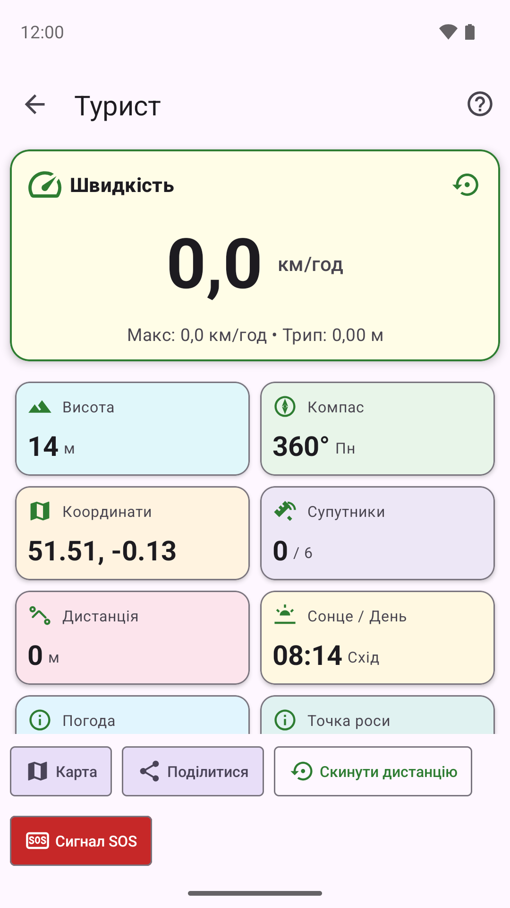
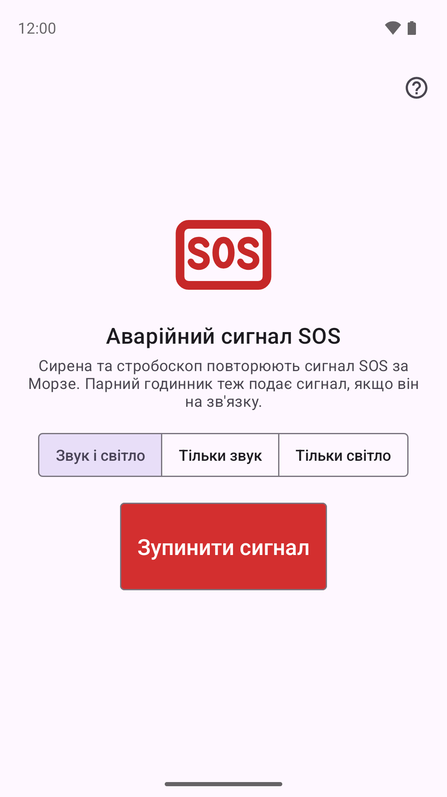
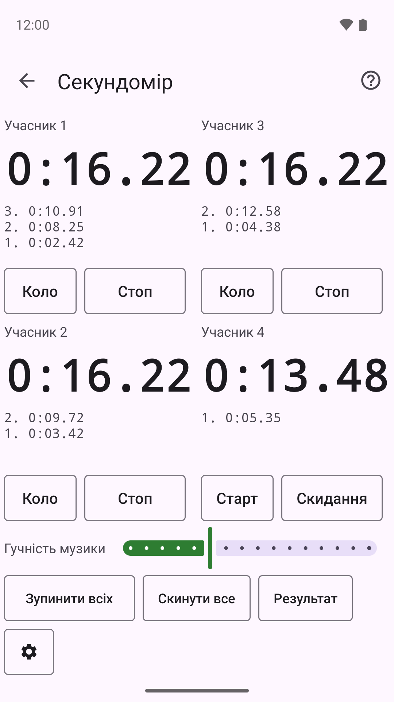
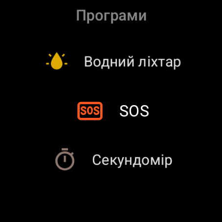

Перевірте, куди ви йдете
Відкрийте панель: плитка з компасом і вашим напрямком, далі швидкість, висота, координати, супутники, схід і захід сонця, кроки, пройдена відстань і погода у вашому місці.
Tourist
Набір для походу на Android і Wear OS
Один застосунок на телефоні й годиннику: панель із показаннями датчиків, сирена та стробоскоп, які доходять до спареного годинника, і ліхтарик, який не вимкнути мокрим дотиком.
Tourist - набір для походу на телефоні Android і годиннику Wear OS. Він для вас, коли ви йдете стежкою сам чи з групою й хочете тримати напрямок, світло та сигнал SOS в одному місці.
Відкрийте панель: плитка з компасом і вашим напрямком, далі швидкість, висота, координати, супутники, схід і захід сонця, кроки, пройдена відстань і погода у вашому місці.
Одна кнопка вмикає сирену та стробоскоп абеткою Морзе на телефоні й на спареному годиннику. Вона не надсилає SMS і не телефонує.
Водний ліхтар - повноекранне світло, яке не вимкнути мокрим дотиком. Вимикається клавішею гучності. Це блокування дотиків, а не водонепроникність.
Секундомір на одного, двох чи чотирьох учасників із колами в кожного й підсумком, яким можна поділитися.




Tourist - програма з відкритим вихідним кодом за ліцензією MIT. Вихідний код застосунку для телефона, застосунку для Wear OS і циферблата відкритий.
Головна плитка - компас із вашим напрямком, далі швидкість, висота, координати, супутники, схід і захід сонця, кроки й темп, пройдена відстань із набором і скиданням висоти та погода у вашому місці. Якщо в телефоні є барометр, плитка магнітного поля показує тиск повітря в мілібарах, а плитка гіроскопа малює тривимірний телефон, який повертається разом із вашим.
Кнопки внизу відкривають карту, надсилають вашу позицію текстом, скидають дистанцію та відкривають SOS.
Одна кнопка вмикає гучну сирену та яскравий стробоскоп абеткою Морзе. Сигнал, запущений на телефоні, запускається й на спареному годиннику, і навпаки, щоб люди поруч могли вас знайти. Виберіть звук і світло, лише звук або лише світло.
SOS звучить, блимає й доходить до спареного пристрою. Він не надсилає SMS і не телефонує.
Водний ліхтар - повноекранне світло, яке не вимкнути мокрим дотиком: дощ, сніг чи мокра рукавиця лишають його ввімкненим. Вимикається він свідомим натисканням клавіші.
Це блокування дотиків, а не водонепроникність. Перед увімкненням світла Android просить закріпити застосунок.
Екранне світло будь-якого кольору, спалах камери як ліхтарик, віджети на головному екрані та ярлик у шторці сповіщень.
Секундомір на одного, двох чи чотирьох учасників із колами й підсумками, музика на ваш вибір, поки він іде, і віджет на головному екрані. На годиннику він продовжує йти як поточна дія.
Застосунок для Wear OS приносить на зап'ясток SOS, водний ліхтар і секундомір - із телефоном поруч чи без нього. Циферблат Tourist - окремий пакет для годинника.
Посібник розбирає інструменти по одному завданню. Підтримка каже, куди звернутися й що вказати. Політика конфіденційності перелічує, що застосунки читають, зберігають і надсилають. Довідка також вбудована в кожен екран застосунку для телефона й працює без мережі.
Розробник не отримує жодних ваших даних. Політика конфіденційності перелічує кожен дозвіл і єдиний запит, який залишає телефон: запит погоди до Open-Meteo.
Tourist - програма з відкритим вихідним кодом за ліцензією MIT. Читайте код, стежте за змінами або створіть звернення в репозиторії.